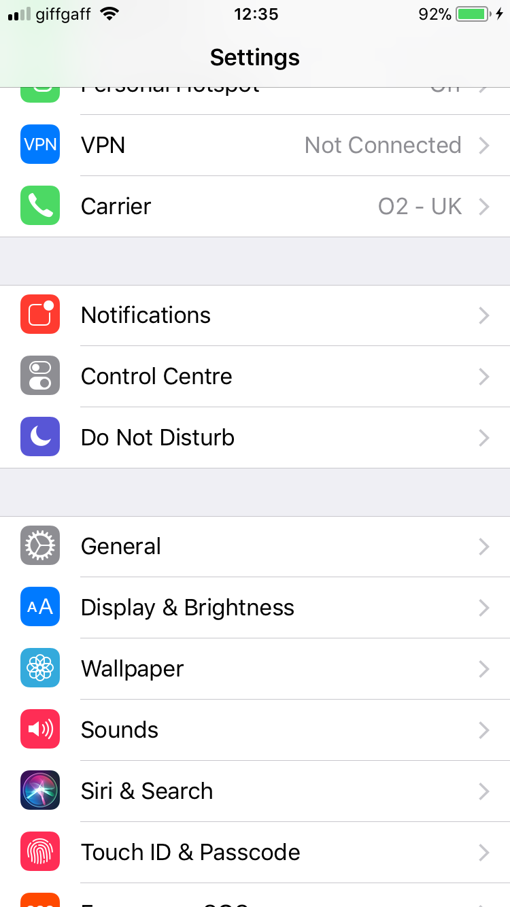
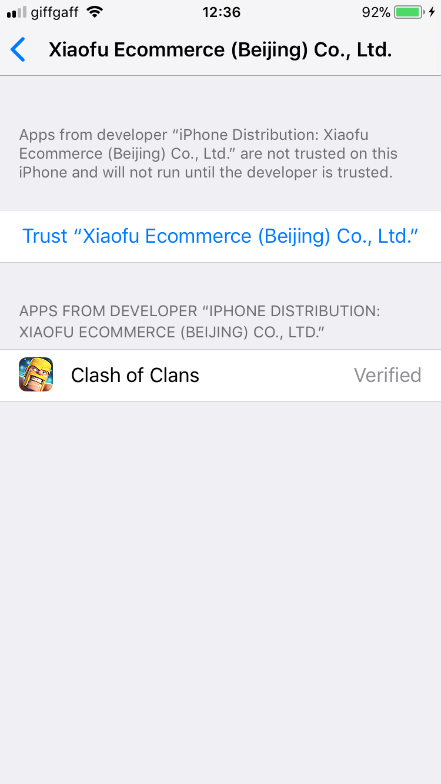

Welcome to Clash of Clans hack, the best way to get free gold, elixer, dark elixer and gems!
A Clash of Clans hack that finally works. This hack, brought to you by plenix clash, is here and is easier to use than ever. This website will not ask you for anything other than to follow the instuctions given. There are no surveys, swindles or scams involved!
In order to hack Clash of Clans, you just need to follow these steps.
1. Go to The official tweakbox website.
2. Download the app onto your mobile device.
3. You will be taken to the configurations. Tap install.
4. Once it has installed, on your homepage open the app.
5. When you are in the app, click apps.
6. Click hacked games.
7. Click clash of clans hack.
8. Hit install.
9. Hit install again.
10. It may say untrusted developer. So in this case open settings.
11. Go to general.

12. Once in general, tap profiles and device management.
13. Open Xiaofu Ecinnerce.
14. Press trust.

15. Open the hacked version of Clash of Clans and enjoy playing!
Before following these steps, I reccomend you to make sure you do not have restrictions turned on, you are connected to the internet and you have sufficient storage.
This hack was brought to you by plenix clash. I would strongly reccomend you visit their website and donate to them to keep this hack operational. You can visit them Here
I do not own this hack. I am simply bringing attention to it. These steps have not been tested on andriod.
This website was made with HTML